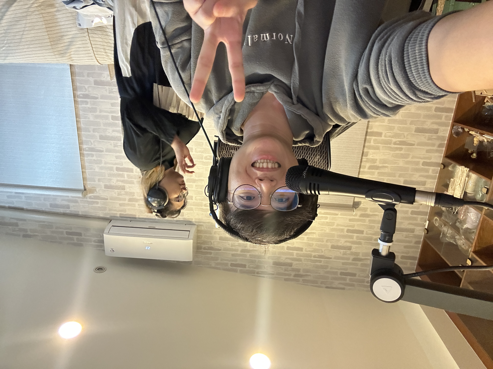
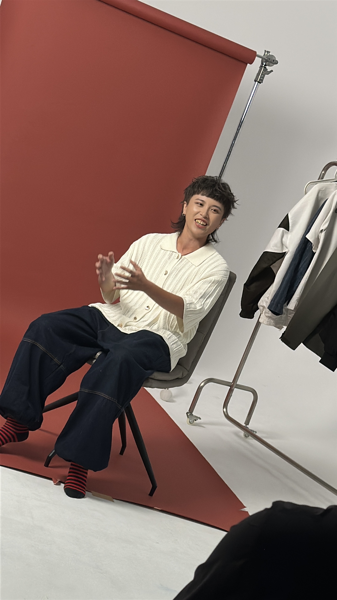

學生合照
專業歌唱教學 × 配唱式引導
給願意認真練習、真心想進步的你


我在課堂裡做的不是「叫你唱大聲」或「叫你模仿別人」。
我更在意的是：透過觀察原唱者，形塑你到底想唱成什麼樣子、卡在哪裡、怎麼用最省力的方式把聲音放回你的身體。
「老師一直很有耐心地指導我，細心糾正發音，也鼓勵我不要害怕唱錯。」
「上課氣氛非常輕鬆，課程中不會指導過量，會依照我的狀態給建議。」
「不只是學唱歌，還會引導我思考一首歌想表達什麼，情感會更自然出來。」
「老師能準確指出我的進步空間，並給具體有效的改進方式，讓我更有自信。」
（以上為匿名節錄，保留原意，僅做排版與標點整理。）
我會為您的聲音做一次免費的檢測。
為保障教師與其他學員的權益：